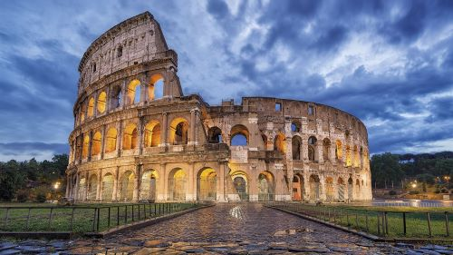

Mi vida, Gutierrez Ascencio Luis Angel Tadeo
Bibliografia
Soy Luis Angel Tadeo Gutierrez Ascencio, naci el 2 de agosto del agosto del 2004 en la ciudad de Leon, ubicada en el estado de Guanajuato en Mexico, mi madre se llama Blanca Estela Ascencio Perez y mi padre Juan Luis Gutierrez Delgado, tambien tengo una hermana llamada Jennifer Esmeralda Gutierrez Ascencio, comense a ir a la escuela a la edad de 5 anos en el kinder Tilloly, despues curse la primaria en la escuela Antonio Sanchez Herrera, para posteriormente seguir en la secundaria General No. 1 Hermanos Aldama, una vez finalizada procegui a estudiar la preparatoria en el Centro de Estudios Tecnológicos Industrial y de Servicios No. 21 en la cual escogui la carrera tecnica de mecanico industrial, en la cual tuve que realizar practica profesionales en una empresa dedicada al mismo giro y de mas funciones la cual es Servicios Arias. Despues de graduarme entre en la Universidad Tecnologica de Leon en la cual sigo y estoy cursando el TSU el cual es Gestion y Desarrollo de Software.
Familia
En cuanto a mi familia esta mi papá Luis Gutierrez, mi mamá Blanca Ascencio, mi hermana Jennifer Ascencio, de parte de mi mamá mi abuela Beatriz Perez, mi abuelo que descanse en paz Juan Ascencio, mis tios Jorge Ascencio, Javier Ascencio, mis tias Guadalupe Ascencio y Lourdes Ascencio, al igual que tambien son parte de mi familia mis mascotas los cuales tengo dos perros.
Pasatiempos
En cuanto a mis pasatiempos principales yo diria que son jugar con mis amigos videojuegos, dormir todo el tiempo que pueda, escuchar musica, comer y hacer comida frita, preacticar calistenia, ver peliculas y salir con amigos.
Lugar que quiero visitar
Hay muchos lugares que me gustaria poder visitar pero considero que los que mas me gustaria poder visitar son 5:
Moscu, Rusia por sus increibles construcciones y porque siempre me a interesado o mas bien dicho llamado la atencion poder visitar y conocer Rusia y que mejor lugar que su capital.
Italia, en cuanto a este pais hay muchos lugares que me gustaria poder visitar, entre ellos estan:
Pisa para poder ver la torre inclinada de pisa mientras como una rebanada de pizza clasica italiana.
Venecia para navegar en los famosos canales que tiene esta misma ciudad.
Florencia ya que esta ciudad tiene grandes museos y fue donde vivio el gran Leonardo Da Vinci y me gustaria poder ver muchas de las cosas que hizo.
Roma ya que en roma hay demaciado que hacer y ver, de un lado esta el coliseo, su arquitectura, los museos y esculturas de grandes maestros.
El vaticano ya que me gustaria poder ver la Capilla Sixtina pintada por Miguel Ángel, ademas de las decoraciones y las esculturas que posee esta misma ciudad.
Paris, Francia por su comida y sus diferentes sitios turisticos como lo son sus museos, sus fuentes y plazas, entre los cuales si o si tendria que visitar son 4, los cuales con Palacio de Versalles, el Museo del Louvrela, la magnifica torre Eifel y las Catacumbas de París.
Las vegas, Nevada, Estados Unidos solo por el divertinaje y conocer la aclamada ciudad que nunca duerme, es uno de los lugares que mas me llama la tencion poder conocer.
Lugar que no quiero visitar
Aqui habra un pequeño listado de los lugares a los cuales no me gustaria ir por motivos personales u otro motivo que haga que no desee ir ahí.Anteriormente dije que me gustaria ir a rusia, pero hay un lugar al cual no me gustaria ir, el cual es
Chernóbilpor la alta radiacion que sigue presente en ese lugar debido al accidente que tubo lugar ahi mismo hace algun tiempo.La
India, si bien es un destino al cual a muchas personas les gustaria visitar a mi en lo personal no me gustaria por el hecho la hijiene que tiene la gran mayoria de personas.Tampoco me gustaria visitar Brazil, mas especificamente el
Amazonaspor todo lo que se ecnuentra en ese lugar, tanto dentro como fuera de sus aguas casi no exploradas y en sus densas y peligrosas selvas donde aparte de cuidarse de los animales uno se tendria que cuidar de las personas que hay viven o "trabajan".